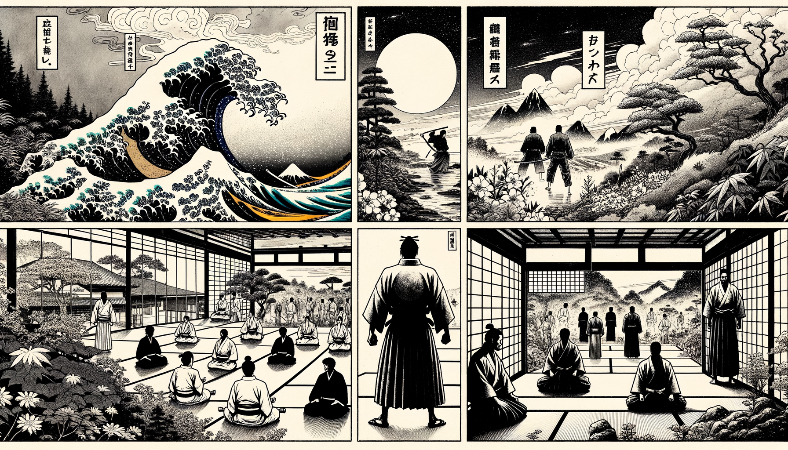

七十五巻 巻一覧
正法眼藏第38 葛藤
本ページは tools/gen_web_volumes.py が doc/正法眼蔵.txt から冒頭を抜粋して生成しています。図・詳細解説は今後の手編集で拡張できます。
出典（原文）: https://shomonji.or.jp/zazen/doc/genzou.html
（ローカル生成の全文: 全文ページ）
この巻の位置づけ（学習メモ）
道元『正法眼蔵』七十五巻の第38篇「葛藤」です。禅籍・経典への引用や語の行間が重なりやすいので、一度ですべてを要約に還元しない読み方を推奨します。問答 Bot では巻スコープにこの題名を含めると応答が安定しやすいことがあります。
語彙の足場
- 題名語：巻題「葛藤」は、道元が本章で特に扱う論点の看板です。辞書義だけに固定せず、本文中の用例で意味を確かめます。
- 引用と典故：公案・経文の引用は、一字一句の照応（何に答えているか）を押さえると全体が見えやすくなります。
- 学び方：冒頭だけでも音読し、分からない箇所は印を付けて後から問うとよいです。
本文（冒頭・自動抜粋）
出典はリポジトリ内 doc/正法眼蔵.txt です。原文の参照元: https://shomonji.or.jp/zazen/doc/genzou.html
釋迦牟尼佛の正法眼藏無上菩提を證傳せること、靈山會には迦葉大士のみなり。嫡嫡正證二十八世、菩提達磨尊者にいたる。尊者みづから震旦國に祖儀して、正法眼藏無上菩提を太祖正宗普覺大師に附囑し、二祖とせり。
第二十八祖、はじめて震旦國に祖儀あるを初祖と稱ず、第二十九祖を二祖と稱ずるなり。すなはちこれ東土の俗なり。初祖かつて般若多羅尊者のみもとにして、佛訓道骨、まのあたり證傳しきたれり、根源をもて根源を證取しきたれり、枝葉の本とせるところなり。
おほよそ諸聖ともに葛藤の根源を截斷する參學に趣向すといへども、葛藤をもて葛藤をきるを截斷といふと參學せず、葛藤をもて葛藤をまつふとしらず。いかにいはんや葛藤をもて葛藤に嗣續することをしらんや。嗣法これ葛藤としれるまれなり、きけるものなし。道著せる、いまだあらず。證著せる、おほからんや。
先師古佛云、胡蘆藤種纏胡蘆（胡蘆藤種、胡蘆を纏ふ）。
この示衆、かつて古今の諸方に見聞せざるところなり。はじめて先師ひとり道示せり。胡蘆藤の胡蘆藤をまつふは、佛祖の佛祖を參究し、佛祖の佛祖を證契するなり。たとへばこれ以心傳心なり。
第二十八祖、謂門人云（第二十八祖、門人に謂て云く）、時將至矣、汝等盍言所得乎（時將に至りなんとす、汝等盍ぞ所得を言はざるや）。
時門人道副曰（時に門人道副曰く）、如我今所見、不執文字、不離文字、而爲道用（我が今の所見の如きは、文字を執せず、文字を離れず、しかも道用をなす）。
祖曰、汝得吾皮（汝、吾が皮を得たり）。
尼總持曰、如我今所解、如慶喜見阿閦佛國、一見更不再見（我が今の所解の如きは、慶喜の阿閦佛國を見しに、一見して更に再見せざりしが如し）。
祖曰、汝得吾肉（汝、吾が肉を得たり）。
道育曰、四大本空、五陰非有、而我見處、無一法可得（四大本空なり、五陰有に非ず、しかも我が見處は、一法として得べき無し）。
祖曰、汝得吾骨（汝、吾が骨を得たり）。
最後慧可、禮三拜後、依位而立（最後に慧可、禮三拜して後、位に依つて立てり）。
祖曰、汝得吾髓（汝、吾が髓を得たり）。
果爲二祖、傳法傳衣（果して二祖として、傳法傳衣せり）。
いま參學すべし、初祖道の汝得吾皮肉骨髓は、祖道なり。門人四員、ともに得處あり、聞著あり。その聞著ならびに得處、ともに跳出身心の皮肉骨髓なり、脱落身心の皮肉骨髓なり。知見解會の一著子をもて、祖師を見聞すべきにあらざるなり。能所彼此の十現成にあらず。しかあるを、正傳なきともがらおもはく、四子各所解に親疎あるによりて、祖道また皮肉骨髓の淺深不同なり。皮肉は骨髓よりも疎なりとおもひ、二祖の見解すぐれたるによりて、得髓の印をえたりといふ。かくのごとくいふいひは、いまだかつて佛祖の參學なく、祖道の正傳あらざるなり。
しるべし、祖道の皮肉骨髓は、淺深に非ざるなり。たとひ見解に殊劣ありとも、祖道は得吾なるのみなり。その宗旨は、得吾髓の爲示、ならびに得吾骨の爲示、ともに爲人接人、拈草落草に足不足あらず。たとへば拈花のごとし、たとへば傳衣のごとし。四員のために道著するところ、はじめより一等なり。祖道は一等なりといへども、四解かならずしも一等なるべきにあらず。四解たとひ片片なりとも、祖道はただ祖道なり。
おほよそ道著と見解と、かならずしも相委なるべからず。たとへば、祖師の四員の門人にしめすには、なんぢわが皮吾をえたりと道取するなり。もし二祖よりのち、百千人の門人あらんにも、百千道の説著あるべきなり。窮盡あるべからず。門人ただ四員あるがゆゑに、しばらく皮肉骨髓の四道取ありとも、のこりていまだ道取せず、道取すべき道取おほし。しるべし、たとひ二祖に爲道せんにも、汝得吾皮と道取すべきなり。たとひ汝得吾皮なりとも、二祖として正法眼藏を傳附すべきなり。得皮得髓の殊劣によれるにあらず。また道副道育總持等に爲道せんにも、汝得吾髓と道取すべきなり。吾皮なりとも、傳法すべきなり。祖師の身心は、皮肉骨髓ともに祖師なり。髓はしたしく、皮はうときにあらず。
いま參學の眼目をそなへたらんに、汝得吾皮の印をうるは、祖師をうる參究なり。通身皮の祖師あり、通身肉の祖師あり、通身骨の祖師あり、通身髓の祖師あり。通身心の祖師あり、通身身の祖師あり、通心心の祖師あり。通祖師の祖師あり、通身得吾汝等の祖師あり。これらの祖師、ならびに現成して、百千の門人に爲道せんとき、いまのごとく汝得吾皮と説著するなり。百千の説著、たとひ皮肉骨髓なりとも、傍觀いたづらに皮肉骨髓の説著と活計すべきなり。もし祖師の會下に六七の門人あらば、汝得吾心の道著すべし、汝得吾身の道著すべし、汝得吾佛の道著すべし、汝得吾眼睛の道著すべし、汝得吾證の道著すべし。いはゆる汝は、祖なる時節あり、慧可なる時節あり、得の道理を審細に參究すべきなり。
しるべし、汝得吾あるべし、吾得汝あるべし、得吾汝あるべし、得汝吾あるべし。祖師の身心を參見するに、内外一如なるべからず、渾身は通身なるべからずといはば、佛祖現成の國土にあらず。皮をえたらんは、骨肉髓をえたるなり。骨肉髓をえたるは、皮肉面目をえたり。ただこれを盡十方界の眞實體と曉了するのみならんや、さらに皮肉骨髓なり。このゆゑに得吾衣なり、汝得法なり。これによりて、道著も跳出の條條なり、師資同參す。聞著も跳出の條條なり、師資同參す。師資の同參究は佛祖の葛藤なり、佛祖の葛藤は皮肉骨髓の命脈なり。拈花瞬目、すなはち葛藤なり。破顔微笑、すなはち皮肉骨髓なり。
さらに參究すべし、葛藤種子すなはち脱體の力量あるによりて、葛藤を纏遶する枝葉花果ありて、囘互不囘互なるがゆゑに、佛祖現成し、公案現成するなり。
趙州眞際大師示衆云、迦葉傳與阿難、且道、達磨傳與什麼人（迦葉、阿難に傳與せり、且く道ふべし、達磨什麼人にか傳與せる）。
因僧問、且如二祖得髓の如、又作麼生（且く二祖の得髓の如き、又作麼生）。
師云、莫謗二祖（二祖を謗ずること莫れ）。
師又云、達磨也有語、在外者得皮、在裡者得骨。且道、更在裏者得什麼（達磨也た語くこと有り、外に在る者は皮を得、裡に在る者は骨を得と。且く道ふべし、更に在裏の者は什麼をか得る）。
僧問、如何是得髓底道理（如何ならんか是れ得髓底の道理）。
師云、但識取皮、老僧者裡、髓也不立（但だ皮を識取すべし。老僧が者裡、髓も也た不立なり）。
僧問、如何是髓（如何ならんか是れ髓）。
師云、與麼卽皮也摸未著（與麼ならば卽ち、皮も也た摸未著なり）。
しかあればしるべし、皮也摸未著のときは、髓也摸未著なり。皮を摸得するは、髓もうるなり。與麼卽皮也摸未著の道理を功夫すべし。如何是得髓底道理と問取するに、但識取皮、老僧遮裏、髓也不立と道取現成せり。識取皮のところ、髓也不立なるを、眞箇の得髓底の道理とせり。かるがゆゑに、二祖得髓、又作麼生の問取現成せり。迦葉傳與阿難の時節を當觀するに、阿難藏身於迦葉なり、迦葉藏身於阿難なり。しかあれども、傳與裏の相見時節には、換面目皮肉骨髓の行李をまぬかれざるなり。これによりて、且道、達磨傳與什麼人としめすなり。達磨すでに傳與するときは達磨なり、二祖すでに得髓するには達磨なり。この道理の參究によりて、佛法なほ今日にいたるまで佛法なり。もしかくのごとくならざらんは、佛法の今日にいたるにあらず。この道理、しづかに功夫參究して、自道取すべし、教他道取すべし。
在外者得皮、在裏者得骨、且道、更在裏者得什麼。
いまいふ外、いまいふ裏、その宗趣もとも端的なるべし。外を論ずるとき、皮肉骨髓ともに外あり。裏を論ずるとき、皮肉骨髓ともに裏あり。
しかあればすなはち、いま四員の達磨、ともに百千萬の皮肉骨髓の向上を條條に參究せり。髓よりも向上あるべからずとおもふことなかれ。さらに三五枚の向上あるなり。
趙州古佛のいまの示衆、これ佛道なり。自餘の臨濟徳山大潙雲門等のおよぶべからざるところ、いまだ夢見せざるところなり。いはんや道取あらんや。近來の杜撰の長老等、ありとだにもしらざるところなり。かれらに爲説せば、驚怖すべし。
雪竇明覺禪師云、趙睦二州、是れ古佛なり。
しかあれば、古佛の道は佛法の證驗なり。自己の曾道取なり。
雪峰眞覺大師云、趙州古佛。
さきの佛祖も古佛の讃歎をもて讃歎す、のちの佛祖も古佛の讃歎をもて讃歎す。しりぬ、古今の向上に超越の古佛なりといふことを。
しかあれば、皮肉骨髓の葛藤する道理は、古佛の示衆する汝得吾の標準なり。この標格を功夫參究すべきなり。
また初祖は西歸するといふ、これ非なりと參學するなり。宋雲が所見かならずしも實なるべからず、宋雲いかでか祖師の去就をみん。ただ祖師歸寂ののち、熊耳山にをさめたてまつりぬるとならひしるを、正學とするなり。
正法眼藏葛藤第三十八
爾時寛元元年癸卯七月七日在雍州宇治郡觀音導利興聖寶林寺示衆
寛元二年甲辰三月三日在越州吉田郡吉峰寺侍司書寫 懷弉
図解（4コマ・AI生成）
教義の根拠は本文・出典に従い、漫画は比喩の補助に留めてください。

深掘り（読解のコツ）
- 道元文は定義の羅列に見えても、多くの場合誤解への遮断と正伝の姿勢が背骨になっています。
- 「当体」「現成」「即」などの語が出たら、その巻独自の差別相にどう接続しているかをメモしておくとよいです。